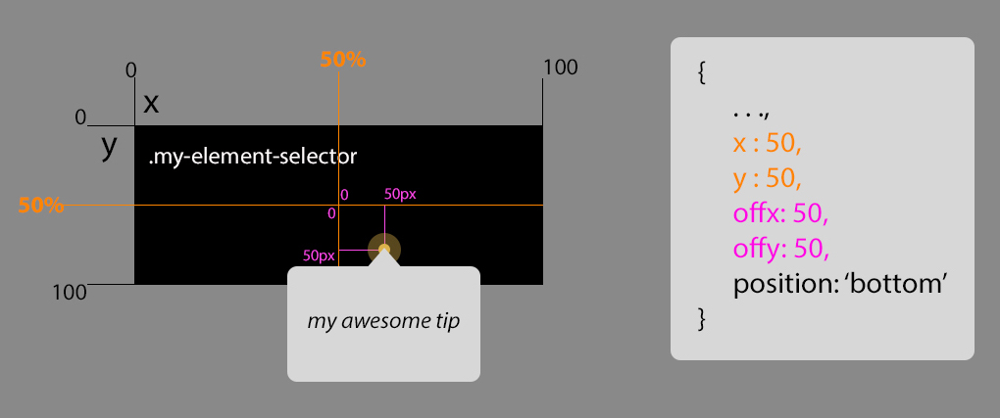

Features
🔝 Top, bottom, right or left? Your choice
Top, bottom, right or left, just set that in your config object and the CSS will take care of layouting everything.
🎯 Fine grain positioning and dynamic re-centering
Positioning your tip in the right place is critical. This library allows you the maximum flexibility. Combining a positioning system based on selectors, percentage units and fixed pixel units (up to a total of 5 positioning inputs), it allows a dynamic repositioning and a pixel-perfect fine-tuning.
📱 Mobile ready
The default breakpoint (from bootstrap) where it changes from desktop to mobile version is 768px. Because in mobile screens is difficult to position floating tips due to the very low space available, it renders itself at the centre of the screen (like a modal) and shows the image that you provided for each step.
🤡 Customizable
All the most important things can be easily customized, you can override the default options in JS with the config object and in CSS with the CSS variables. Every CSS variable is namespaced with
--product-tour-js-{name} to avoid possible conflicts with other variables. The only thing you have to change manually if you'd like to change is the mobile breakpoint, unfortunately we can't use (yet?) a CSS variable for defining a media query (more on that).
⚙️ On-select custom functions
The user has just switched to the next tip, but you'd like to change tab, open an accordion or do other useful stuff. No problem. You can specify an
onSelected function in you config object which will be executed as soon as the tip is changed and selected.
📡 Events
Although this library doesn't rely on events to work, it dispatch them anyway for generic purposes. You may want to track something or do some action in response of an event. The default three events dispatched are:
on-product-tour-js-next, on-product-tour-js-prev and
on-product-tour-js-exit.
Docs
How to import / use it?
- download it (github)
- add the
lib.js and
lib.css files to your page (requirements)
- create your custom configuration (more on that later)
- when you want to start it call
ProductTourJS.init(your-options-obj); and
ProductTourJS.start();
How the positioning system works?
The positioning system is designed to allow both flexibility and fine-grain tuning. It uses five inputs to determine the position of the tip. The object which will be the reference for all the others coordinates is set by the selector option of your tip object. His top-left corner will be the (0;0) point of the system. Then come in the percentage units (x, y). They will set the position of the tip related to your selected object in percentage (ex. x=0 -> left edge, x=50 -> centre, x=100 -> right edge, x=200 -> two times the selected object length to the right). For fine tuning this relative positioning come in your help the fixed pixel measurements (offx and offy, ex. offx=100 -> shift the current position to 100px to the right, offy=-50 -> shift the current position to 50px from the bottom).
Here an hopefully explicative image:

What about re-sizing the window?
This is a feature designed from the beginning and it works out of the box. When the user resize the window, the library automatically recalculates all the positions of the tips, and places them at the right pixel. The resize event is throttled to 1 repositioning allowed every 300ms of resizing, so you don't have to worry about potential performance issues.
What CSS variables do you use?
:root {
/* CONFIG VARIABLES */ /* DEFAULTS */
--product-tour-js-brand-color : #DCB24C;
--product-tour-js-brand-color-light : rgba(220, 178, 76, 0.43);
--product-tour-js-brand-color-dark : #AD8C3E;
--product-tour-js-bg-color : #FFFFFF;
--product-tour-js-bg-color-dark : #F7F7F7;
--product-tour-js-font : sans-serif;
}
What is my-custom-options-obj like?
let tourOptions = {
options : {
darkLayerPersistence : true,
next : 'Next',
prev : 'Previous',
finish : 'Okay!',
mobileThreshold: 768
},
tips : [
{
title : '🤘🏼 My title',
description : 'My description',
image : 'my/image/path.png',
selector : '.my-selector',
x : 50,
y : 50,
offx : 10,
offy : -20,
position : 'top',
onSelected : false
},
{...TIP2},
{...TIPN},
]
};
tourOptions.options (Object):
-
darkLayerPersistence: [default: false] whether keep the dark layer for all the interactions or show it only when changing the tip and then fade it out
next: [default: 'Next'] the text for the next linkprev: [default: 'Previous'] the text for the previous linkfinish: [default: 'Okay!'] the text for final button-
mobileThreshold: [default: '768'] the threshold where it switches to the mobile version
tourOptions.tips (Array[1..N of tips Objects]):
title: title of your tipdescription: description of your tipimage: path of the image to show in the mobile version-
selector: a jQuery compatible selector to select the main element to attach the tip to
-
x: a number (percentage) which indicates where to place horizontally the tip related to the element (ex. 0=left edge, 100=right edge)
-
y: a number (percentage) which indicates where to place vertically the tip related to the element (ex. 0=top edge, 100=bottom edge)
-
notice: to centre the tip inside your element just use x=50 and y=50, those value are calculated in relation to the centre of the tip's animated circle
offx: the number of px to offset the position horizontally (fined tuning)offy: the number of px to offset the position vertically (fined tuning)-
position: the layout of the tip, given the centre point (with x, y, offx and offy) it tells how to layout the tip (options available: 'top', 'bottom', 'left', 'right')
-
onSelected: a function that will be executed as soon as the user reach the specified tip
-
notice: that function will be called with the tour object itself as first argument, so you can make changes in your UI, ex. opening a tab or an accordion, and then you can call the 'tour.setPositions()' to refresh the positions of your tips
Requirements:
Issues, improvements, etc.:
If you want to open an issue, a PR, propose a change, etc., open it on
github.